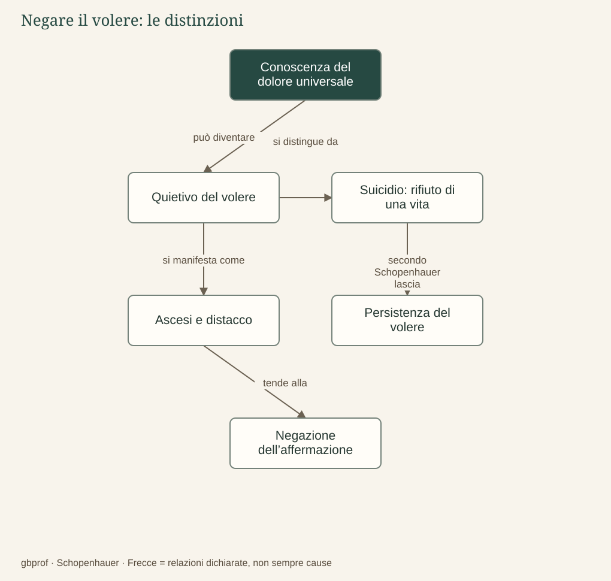

A · Comprendere Schopenhauer · 10
Ascesi e negazione della Volontà
È possibile uscire dal meccanismo del desiderio?
Se ogni soddisfazione lascia intatta la possibilità di desiderare ancora, accumulare beni o successi non può produrre una liberazione definitiva. Schopenhauer porta allora il problema a un livello più radicale: non cerca un oggetto capace di appagare finalmente il volere, ma una trasformazione nella quale il volere cessi di affermare se stesso. È questo il significato della negazione della Volontà di vivere, che non va confusa con un consiglio pratico per ottenere un benessere più efficiente.
La conoscenza come quietivo
Nella vita ordinaria la conoscenza offre motivi all’azione: individua qualcosa che desideriamo e ci mostra come raggiungerlo. Nella prospettiva ascetica, la comprensione del dolore del mondo cambia funzione. Chi non guarda più soltanto alla propria vicenda, ma riconosce il carattere universale della sofferenza, può perdere l’adesione al meccanismo che continuamente la riproduce. La conoscenza diventa allora un quietivo, cioè ciò che acquieta il volere invece di alimentarlo.
Schopenhauer riconosce questa trasformazione in figure ascetiche di tradizioni diverse, lette attraverso il proprio sistema filosofico. Distacco dai possessi, rinuncia all’affermazione egoistica e castità assumono il significato di un rifiuto dell’attaccamento che prolunga il volere. Questi riferimenti appartengono a una ricostruzione storico-filosofica; non equivalgono a identificare tra loro cristianesimo, buddhismo e tradizioni indiane, che hanno dottrine e pratiche differenti.
Rinunciare a un desiderio non è negare il volere
Possiamo rinunciare a una spesa per comprarne una più importante, oppure abbandonare un obiettivo per conquistarne un altro. In simili casi il volere non viene negato, ma riorganizzato. Anche la disciplina personale può essere interamente al servizio dell’ambizione. L’ascesi schopenhaueriana indica invece un distacco dalla richiesta che il mondo soddisfi indefinitamente il nostro interesse individuale.
Resta una difficoltà interna al sistema: se ogni scelta ordinaria appartiene al volere, come può la negazione essere semplicemente «voluta» come un successo ulteriore? Schopenhauer non la presenta come un normale calcolo di mezzi e fini. La descrive come una trasformazione eccezionale legata alla conoscenza e al modo in cui la libertà della Volontà si manifesta rispetto al fenomeno. Il problema non scompare; è uno dei punti sui quali il lettore può legittimamente interrogare la coerenza dell’opera.
Perché il suicidio è un’altra cosa
Nel § 69 del Mondo, Schopenhauer distingue esplicitamente il suicidio dalla negazione della Volontà. Nella sua interpretazione filosofica, chi rifiuta la propria esistenza perché non corrisponde alla vita desiderata continua ad affermare il volere, mentre distrugge la sua singola manifestazione. La negazione ascetica riguarda invece l’attaccamento al volere stesso. Questa tesi non è una spiegazione clinica delle persone in crisi e non va usata per giudicarle.
Anche il «nulla» finale richiede attenzione: non è una località ultraterrena né un premio che possiamo descrivere positivamente. Indica il limite del linguaggio di chi continua a conoscere entro la relazione fra soggetto e oggetto. La conclusione del sistema è quindi radicale, ma non autorizza a trasformare la filosofia in un invito a distruggere la vita.

Dopo la lettura
Mappa di sintesi


Leggi la mappa in forma testuale
- Conoscenza del dolore universale può diventare Quietivo del volere.
- Quietivo del volere si distingue da Suicidio: rifiuto di una vita.
- Quietivo del volere si manifesta come Ascesi e distacco.
- Suicidio: rifiuto di una vita secondo Schopenhauer lascia Persistenza del volere.
- Ascesi e distacco tende alla Negazione dell’affermazione.
Fermati sul problema
Perché Schopenhauer distingue suicidio e negazione della Volontà?
Confronta il tuo ragionamento
Nel suo argomento il rifiuto di una vita insoddisfacente può conservare il volere. La distinzione riguarda il volere e la sua manifestazione; è una tesi filosofica, non una spiegazione clinica.